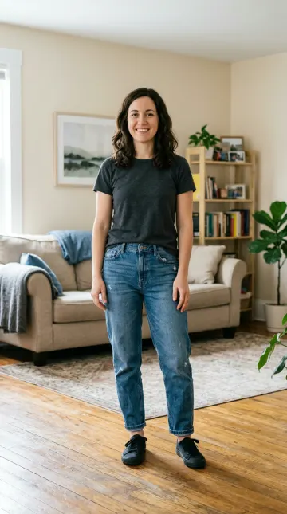
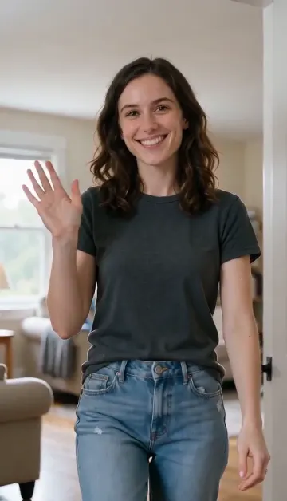
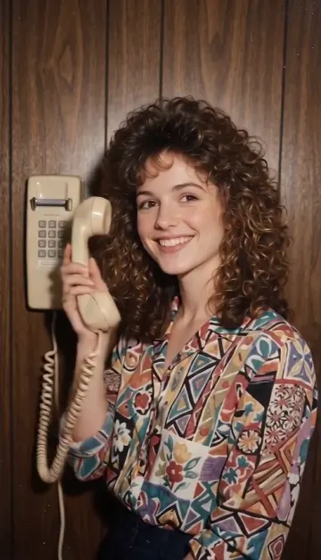
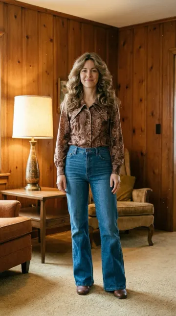
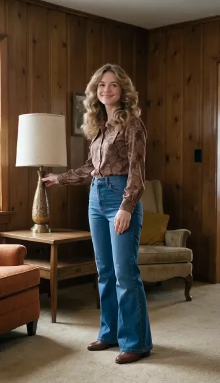

En corto: Claude no tiene modelo de imagen ni de vídeo propio (el centro de ayuda de Anthropic dice que no genera fotos ni ilustraciones, Can Claude produce images?), así que no puede animar una foto por sí solo. Con un conector de vídeo, sí: le das la foto, describes el movimiento y el conector hace el vídeo. Con el conector de Dora, el modelo por defecto, Seedance 2 Mini, cuesta 31 monedas por 8 segundos, entre 0,31 y 0,62 $, que se pagan con monedas de Dora, no con tu plan de Claude.
Antes de empezar
Necesitas Claude con un conector propio (Anthropic lo incluye en todos los planes, en Free uno solo, Claude Help Center) y una cuenta de Dora con monedas. Añadir el conector lleva un minuto; los pasos están en cómo hacer imágenes con Claude y no se repiten aquí.
Paso a paso
- Ten la foto a mano. En nuestros tres ejemplos, la foto era un enlace https público a una imagen. Más abajo, lo que sabemos de otras formas.
- Di cómo se mueve. Una o dos acciones, quién las hace y qué hace la cámara: «sonríe y descuelga el teléfono, cámara fija».
- Elige la duración. Cuatro segundos para una acción, ocho para cruzar una habitación y saludar. Di vertical, horizontal o cuadrado.
- Pide antes el precio. Añade «dime antes lo que cuesta y espera a que lo confirme»; si no, Claude puede empezar directamente.
- Abre el vídeo. El vídeo llega como un enlace al archivo, no dentro del chat. Descárgalo desde ahí.
Cómo pasarle la foto a Claude
En los tres ejemplos de abajo, la foto se pasó como un enlace https público a una imagen (la dirección de una imagen ya guardada en Dora). Eso es lo que podemos enseñar que funcionó. No hemos probado a adjuntar la foto directamente al chat de Claude para esto, así que no decimos si funciona; si falla, pon la foto en un sitio con enlace público y dale ese enlace a Claude.
Cómo escribir el movimiento
- Parte de lo que hay en la foto. «La mujer de la foto…» mantiene a la persona; nombrar objetos que salen en la imagen (el teléfono de pared, la lámpara) le da al movimiento algo con lo que actuar.
- Una acción por vídeo corto. Descolgar un teléfono cabe en 4 segundos; cruzar una habitación y saludar necesitó 8.
- Di qué hace la cámara. «Cámara fija» deja el encuadre quieto; «cámara en mano» le deja moverse y seguir.
- Mantén el estilo. Repite el aspecto de la foto («película cálida de los 80») para que el vídeo case con ella.
Tres fotos animadas así
Las tres se hicieron con el conector de Dora usado desde Claude, el 1 y el 2 de noviembre de 2026, con Seedance 2 Mini, y están guardadas en los registros de Dora con su prompt, sus ajustes y su coste. Ninguna se hizo para esta página. La mujer no es una persona real: la primera foto se generó con Dora y las otras dos son versiones de ella. Ninguno de los tres archivos tiene pista de sonido. Pulsa un fotograma para ver el vídeo.
1. Cruza la habitación y saluda


Ver el vídeo (MP4) · Seedance 2 Mini, vertical 9:16, 8 segundos, 480p, 31 monedas.
Prompt exacto del vídeo (en inglés, tal cual):
The woman from the photo walks toward the camera across the bright room, smiles and waves, her hair moving slightly, handheld camera, natural daylight
Se acerca a la cámara, sonríe y saluda, y la habitación no cambia. La cámara la sigue tan de cerca que el vídeo acaba en su cara y sus hombros, no de cuerpo entero.
2. Una foto de los 80 descuelga el teléfono

Ver el vídeo (MP4) · Seedance 2 Mini, vertical 9:16, 4 segundos, 480p, 16 monedas.
Prompt exacto del vídeo (en inglés, tal cual):
She smiles, tilts her head and picks up the wall phone, curls moving slightly, fixed camera, warm 1980s film look with slight grain
Descuelga el auricular de la pared y se lo acerca a la oreja, sonriendo, y el cable se mueve. Cuatro segundos bastan para una acción así.
La foto de partida se hizo a su vez a partir de la primera, con este prompt (Nano Banana 2, 8 monedas):
Turn the person in the reference photo into a real 1980s snapshot: same face, big curly 80s hair, patterned blouse, standing against wood-panelled wall next to a beige wall phone, warm faded film colours, soft flash, slight grain, natural smile, looks like a genuine photo from 1985, vertical, no text
3. Una foto de los 70 apaga y enciende la lámpara


Ver el vídeo (MP4) · Seedance 2 Mini, vertical 9:16, 4 segundos, 480p, 16 monedas.
Prompt exacto del vídeo (en inglés, tal cual):
She smiles, turns to the table and switches the lamp off and on, wavy hair moving slightly, warm light changes on the wood walls, fixed camera, golden 1970s film look with slight grain
Alarga la mano hacia la lámpara, que se apaga y se vuelve a encender hacia el final. El cambio de luz en las paredes es más flojo de lo que pedía el prompt.
La foto de partida se hizo a su vez a partir de la primera, con este prompt (Nano Banana 2, 8 monedas):
Turn the person in the reference photo into a real 1970s snapshot: same face, long feathered wavy hair, brown patterned blouse with a wide collar, warm wood-panelled living room with a lamp, golden faded film colours, slight grain, soft smile, looks like a genuine photo from 1975, vertical, no text
Cuánto cuesta
| Modelo de vídeo del conector de Dora | Monedas | Notas |
|---|---|---|
| Seedance 2 Mini | 31 por 8 s | El de por defecto; 16 por 4 s a 480p, 66 por 8 s a 720p |
| Grok Imagine 1.5 | 20 | Más barato; una foto como mucho |
| Kling 2.6 Motion Control | 11 por segundo | Copia el movimiento de un vídeo que le das en la persona de la foto; mínimo 3 segundos |
Precios de la lista de modelos del conector de Dora el 2 de noviembre de 2026; más duración, más resolución y sonido cuestan más (página de modelos de Dora). Una moneda sale por unos 0,01 $ en el plan semanal y 0,02 $ en el anual (precios). Si antes cambias la foto, como en los ejemplos 2 y 3, suma la imagen: 10 monedas con Nano Banana 2 (8 cuando se hicieron). Sin monedas no se genera ni se cobra nada, y si una generación falla, las monedas vuelven.
Más
Para vídeos a partir de una descripción en lugar de una foto, y las pruebas cronometradas de Dora, mira how to make videos in Claude (en inglés). Para imágenes fijas, cómo hacer imágenes con Claude. Configuración con un botón que abre el formulario: Dora para Claude. En el iPhone, la misma cuenta y las mismas monedas sirven en la app de Dora.
Fuentes
- Claude Help Center, Can Claude produce images? y Get started with custom connectors using remote MCP, comprobados el 2 de noviembre de 2026.
- Lista de modelos del conector de Dora y precios, leídos el 2 de noviembre de 2026; modelos y costes de Dora.
- Registros de generación de Dora de los tres vídeos y sus fotos de partida: modelo, ajustes, monedas, prompt y enlace de la foto.
Aviso: Saga Labs, que publica esta web, hace Dora. Las fotos y los vídeos se hicieron con Dora; los costes son de Dora.
Preguntas frecuentes
¿Claude puede animar una foto?
Por sí solo, no: Claude no tiene modelo de vídeo. Con un conector de vídeo como Dora, le das la foto y describes el movimiento, y el conector hace un vídeo corto y te devuelve un enlace.
¿Cuánto cuesta animar una foto con Claude?
Tu plan de Claude no lo paga. Con Dora, el modelo por defecto, Seedance 2 Mini, cuesta 31 monedas por 8 segundos y 16 por 4 segundos a 480p, entre unos 0,16 y 0,62 $.
¿Cómo le paso la foto a Claude?
En nuestros ejemplos, la foto era un enlace https público a la imagen. No hemos probado a adjuntarla directamente al chat; si falla, usa un enlace público.
¿Cuánto debe durar el vídeo?
Cuatro segundos bastan para una acción, como descolgar un teléfono; cruzar una habitación y saludar llevó ocho.
¿El vídeo tiene sonido?
Ninguno de nuestros tres ejemplos tiene pista de sonido. Algunos modelos pueden añadirlo, y cuesta más.
¿El resultado se ve en el chat?
Los vídeos llegan como un enlace al archivo, no dentro del chat.